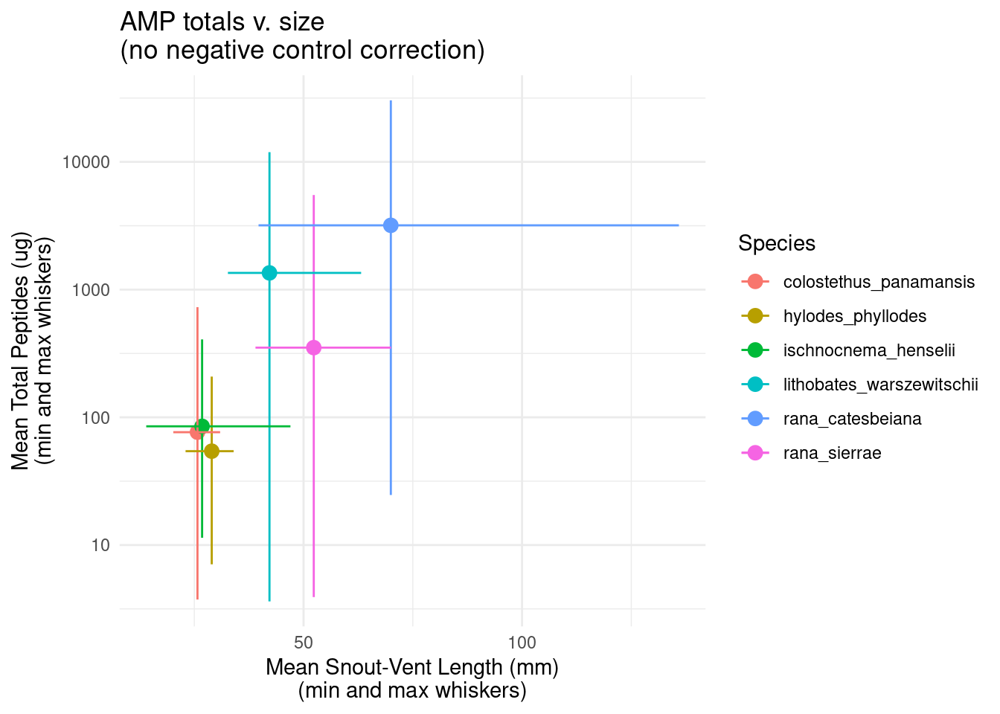

In general, sample results for Bd-qPCR, AMPs, and mucosome assays and their negative controls are stored in similar, parallel structures in the database.
Setup
# minimal packages for RIBBiTR DB data discoverylibrarian::shelf(tidyverse, dbplyr, RPostgres, DBI, RIBBiTR-BII/ribbitrrr)# establish database connectiondbcon <-hopToDB("ribbitr")
Looking at the survey_data schema diagram, we can browse to see which tables and columns we want. We can also consult the table or column metadata. The two observation tables with the primary data of interest are called “capture” and “bd_qpcr_results”.
Let’s begin by taking a look at all the capture data since 2022 for which we have AMP total results. We can preview the columns in there amp_total table with colnames(db_amp_total), by looking at the metadata (mdc), or consulting the survey_data schema diagram.
# un-executed (no "collect()") preliminary querydata_oi = db_amp_total %>%inner_join(db_sample, by ="sample_id") %>%inner_join(db_capture, by ="capture_id") %>%left_join(db_survey, by ="survey_id") %>%left_join(db_visit, by ="visit_id") %>%left_join(db_site, by ="site_id") %>%left_join(db_region, by ="region_id") %>%left_join(db_country, by ="country_id") %>%filter(date >="2022-01-01", sample_type =="amp")# investigate what data are there(stats_data_oi_species = data_oi %>%group_by(taxon_capture) %>%count() %>%collect() %>%arrange(desc(n)))
species_oi = stats_data_oi_species %>%filter(n >50) %>%pull(taxon_capture)data_amp_total = data_oi %>%filter(taxon_capture %in% species_oi) %>%select(result_id, sample_id, sample_name_amp, total_peptides_ug, notes, negative_control_group_id, # we will touch on this later taxon_capture, svl_mm, date, site, region, country) %>%collect()
Summarize by species & visualize
data_summary_species = data_amp_total %>%group_by(taxon_capture) %>%summarise(n =n(),svl_mm_mean =mean(svl_mm, na.rm =TRUE),svl_mm_sd =sd(svl_mm, na.rm =TRUE),svl_mm_min =min(svl_mm, na.rm =TRUE),svl_mm_max =max(svl_mm, na.rm =TRUE),total_peptides_ug_mean =mean(total_peptides_ug),total_peptides_ug_sd =sd(total_peptides_ug),total_peptides_ug_min =min(total_peptides_ug),total_peptides_ug_max =max(total_peptides_ug),.groups ="drop")ggplot(data_summary_species, aes(x = svl_mm_mean, y = total_peptides_ug_mean, color = taxon_capture)) +geom_point(size =3) +geom_errorbar(aes(ymin = total_peptides_ug_min, ymax = total_peptides_ug_max), width =0, orientation ="x") +# vertical whiskersgeom_errorbar(aes(xmin = svl_mm_min, xmax = svl_mm_max), height =0, orientation ="y") +# horizontal whiskerstheme_minimal() +labs(x ="Mean Snout-Vent Length (mm)\n(min and max whiskers)", y ="Mean Total Peptides (ug)\n(min and max whiskers)", color ="Species") +scale_y_log10() +ggtitle("AMP totals v. size\n(no negative control correction)")
`height` was translated to `width`.

Great! But what about our negative controls? We should subtract any peptides found in corresponding negative controls from samples to make this more accurate of the frogs sampled.
# get negative_control_group_idsnc_groups_count = data_amp_total %>%group_by(negative_control_group_id) %>%count()# we see that a substantial number don't have corresponding negative controls in the database yet (NAs). Let's proceed with those that donc_groups = data_amp_total %>%filter(!is.na(negative_control_group_id)) %>%pull(negative_control_group_id) %>%unique()nc_data = db_amp_total %>%inner_join(db_sample, by ="sample_id") %>%filter(negative_control, negative_control_group_id %in% nc_groups) %>%select(result_id, sample_id, sample_name_amp, total_peptides_ug, notes, negative_control, negative_control_group_id) %>%collect()# in general there may be multiple negative controls within a negative control group, good practice to aggregatenc_group_data = nc_data %>%group_by (negative_control_group_id) %>%summarise(nc_n =n(),total_peptides_ug_nc_mean =mean(total_peptides_ug),.groups ="drop")
# calculate correcteddata_amp_total_nc = data_amp_total %>%left_join(nc_group_data, by ="negative_control_group_id") %>%mutate(total_peptides_ug_corrected = total_peptides_ug - total_peptides_ug_nc_mean)data_summary_species_nc = data_amp_total_nc %>%group_by(taxon_capture) %>%filter(!is.na(total_peptides_ug_corrected)) %>%summarise(n =n(), svl_mm_mean =mean(svl_mm, na.rm =TRUE),svl_mm_sd =sd(svl_mm, na.rm =TRUE),svl_mm_min =min(svl_mm, na.rm =TRUE),svl_mm_max =max(svl_mm, na.rm =TRUE),total_peptides_ug_mean =mean(total_peptides_ug),total_peptides_ug_sd =sd(total_peptides_ug),total_peptides_ug_min =min(total_peptides_ug),total_peptides_ug_max =max(total_peptides_ug),.groups ="drop")ggplot(data_summary_species_nc, aes(x = svl_mm_mean, y = total_peptides_ug_mean, color = taxon_capture)) +geom_point(size =3) +geom_errorbar(aes(ymin = total_peptides_ug_min, ymax = total_peptides_ug_max), width =0, orientation ="x") +# vertical whiskersgeom_errorbar(aes(xmin = svl_mm_min, xmax = svl_mm_max), height =0, orientation ="y") +# horizontal whiskerstheme_minimal() +labs(x ="Mean Snout-Vent Length (mm)\n(min and max whiskers)", y ="Mean Total Peptides (ug)\n(min and max whiskers)", color ="Species") +scale_y_log10() +ggtitle("AMP totals v. size\n(with negative control correction)")
{kind=link}